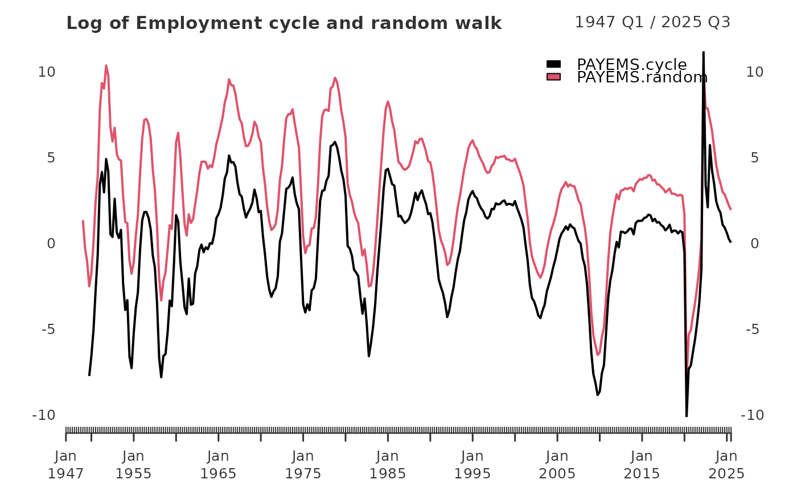

Employment Situation
PAYEMS All Employees: Total Nonfarm
data(PAYEMS)
Format
An xts object containing observations of All Employees: Total Nonfarm.
Release: Employment Situation
Seasonal Adjustment: Seasonally Adjusted
Frequency: Monthly
Units: Thousands of Persons
Date Range: 1939-01-01 to 2017-12-01
Last Updated 2018-01-05 9:13 AM CST
Source
U.S. Bureau of Economic Analysis https://fred.stlouisfed.org/data/PAYEMS.txt
Notes
All Employees: Total Nonfarm, commonly known as Total Nonfarm Payroll, is a measure of the number of U.S. workers in the economy that excludes proprietors, private household employees, unpaid volunteers, farm employees, and the unincorporated self-employed. This measure accounts for approximately 80 percent of the workers who contribute to Gross Domestic Product (GDP).
This measure provides useful insights into the current economic situation because it can represent the number of jobs added or lost in an economy. Increases in employment might indicate that businesses are hiring which might also suggest that businesses are growing. Additionally, those who are newly employed have increased their personal incomes, which means (all else constant) their disposable incomes have also increased, thus fostering further economic expansion.
Generally, the U.S. labor force and levels of employment and unemployment are subject to fluctuations due to seasonal changes in weather, major holidays, and the opening and closing of schools. The Bureau of Labor Statistics (BLS) adjusts the data to offset the seasonal effects to show non-seasonal changes: for example, women's participation in the labor force; or a general decline in the number of employees, a possible indication of a downturn in the economy. To closely examine seasonal and non-seasonal changes, the BLS releases two monthly statistical measures: the seasonally adjusted All Employees: Total Nonfarm (FEDFUNDS) and All Employees: Total Nonfarm (PAYNSA), which is not seasonally adjusted.
The series comes from the 'Current Employment Statistics (Establishment Survey).
The source code is: CES0000000001
Examples
data(PAYEMS) tail(PAYEMS)#> PAYEMS #> Jul 2017 146523 #> Aug 2017 146731 #> Sep 2017 146769 #> Oct 2017 146980 #> Nov 2017 147232 #> Dec 2017 147380PAYEMS_qtr <- xts::to.quarterly(PAYEMS["1947/"], OHLC = FALSE) log_Employment <- 100*log(PAYEMS_qtr) employ_trend <- yth_filter(log_Employment, h = 8, p = 4, output = c("x", "trend"), family = gaussian) main <- "Log of Employment and trend" plot(employ_trend, grid.col = "white", legend.loc = "topleft", main = main)employ_cycle <- yth_filter(log_Employment, h = 8, p = 4, output = c("cycle", "random"), family = gaussian) main <- "Log of Employment cycle and random walk" plot(employ_cycle, grid.col = "white", legend.loc = "topright", main = main)